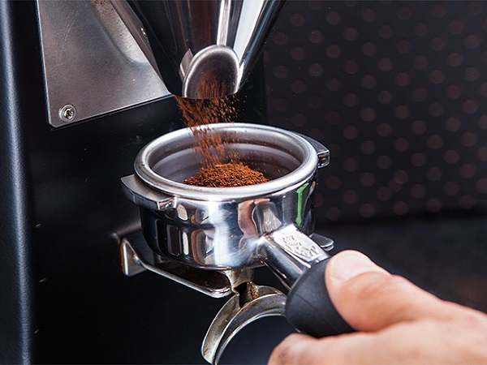
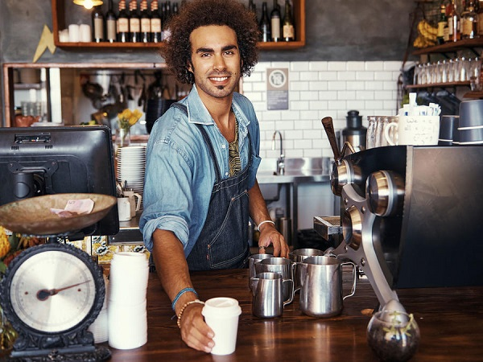
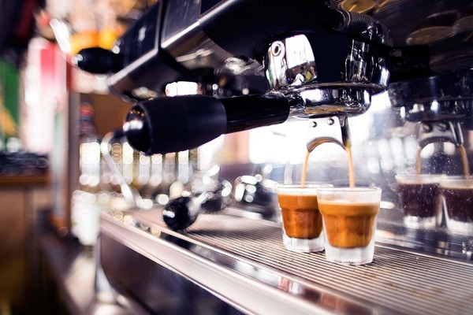
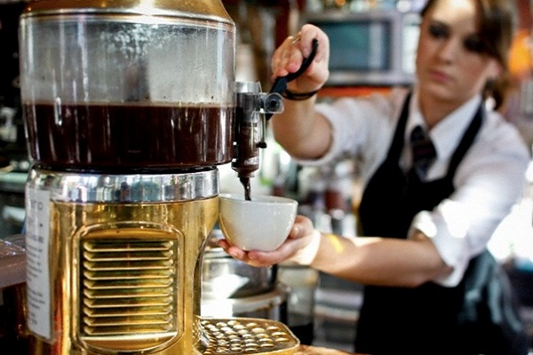
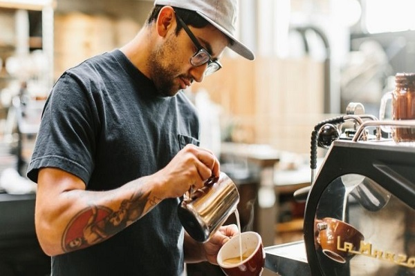
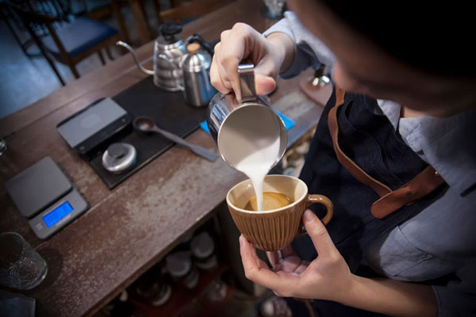
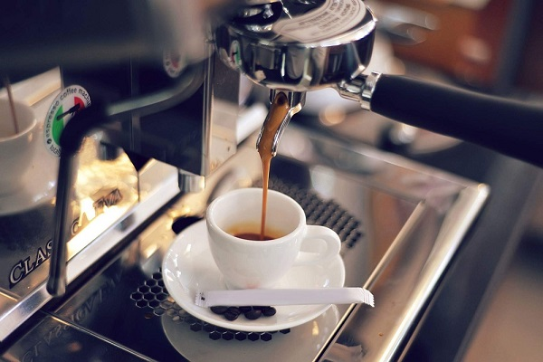
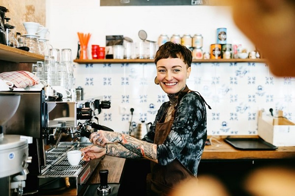

Niềm đam mê của chúng tôi là đưa đến cho khách hàng những ly cà phê thật sự ngon. Dù được rang mộc hay tẩm phụ gia, tất cả chúng đều “sạch và đúng gu”.
Chúng tôi dùng nhiều năm kinh nghiệm để kết tinh những tinh hoa hàng trăm năm qua, từ các công thức chế biến cà phê đến từ khắp Việt Nam.

Chúng tôi đi cùng khách hàng trong câu chuyện tìm ra ly cà phê phù hợp nhất với gu thưởng thức tại địa phương, cùng bạn tạo ra bản sắc đặc trưng trong các đồ uống từ cà phê. Và quan trọng hơn cả, chúng tôi sẽ là đối tác giúp bạn luôn giữ ổn định chất lượng những ly cà phê bạn phục vụ khách hàng.

Với nhiều năm kinh nghiệm trong ngành, chúng tôi luôn lựa chọn cho bạn những máy móc phù hợp với mô hình cửa hàng và hiệu suất đầu tư cao nhất.
Tất cả những máy móc thiết bị dưới đây được lựa chọn dựa trên những tiêu chí cơ bản như: Cấu tạo, tính năng kỹ thuật, công suất, kiểu dáng, độ bền và giá cả theo từng phân khúc. Chúng tôi lựa chọn những sản phẩm này bằng kinh nghiệm và kỹ năng nghề nghiệp của mình, với mong muốn khách hàng luôn được đầu tư hiệu quả nhất.Với nhiều năm kinh nghiệm trong ngành, chúng tôi luôn lựa chọn cho bạn những máy móc phù hợp với mô hình cửa hàng và hiệu suất đầu tư cao nhất.

Với chúng tôi, cà phê ngon là cà phê phù hợp với khẩu vị và an toàn cho sức khỏe của khách hàng.
Việc trang bị đầy đủ dụng cụ pha chế sẽ giúp nhân viên ra đồ đúng thời gian, pha đồ đúng công thức và luôn đảm bảo chất lượng đồ uống.
Trong bất kỳ ngành nghề gì thì bạn cũng luôn phải có trang thiết bị hỗ trợ để bạn có thể hoàn thành tốt nhất công việc của mình. Bartender chuyên về pha chế, công việc đòi hỏi sự linh hoạt, khéo léo và sáng tạo trong việc kết hợp các nguyên vật liệu để tạo ra các loại đồ uống mới nên những dụng cụ pha chế đi kèm để hỗ trợ là vô cùng quan trọng. Vì thế mà dụng cụ pha chế được xem như “người tình trăm năm” với các Bartender.

"Chúng tôi tận dụng kinh nghiệm của mình để tìm ra những nguyên liệu tốt nhất với chi phí thấp nhất. Và tất nhiên, điều đó sẽ giúp bạn có lợi nhuận hơn”
Coffe Master chuyên cung cấp nguyên liệu pha chế cho các nhà hàng, của hàng cà phê…. Với chính sách minh bạch về giá, chúng tôi thường xuyên cập nhật giá cả trên website theo nhu cầu thị trường.Chúng tôi tự tin khi tiên phong trong việc ổn định và bình ổn giá, khách hàng có thể chủ động tham khảo bảng giá của từng nguyên liệu pha chế.

Ngoài việc tiên phong về giá, chúng tôi còn đảm bảo minh bạch nguồn gốc xuất xứ, đảm bảo chất lượng cho mỗi sản phẩm của chúng tôi để xây dựng niềm tin với khách hàng. Chúng tôi cung cấp đầy đủ các loại nguyên liệu pha chế giúp khách hàng tiết kiệm thời gian, không phải tìm quá nhiều cửa hàng mới mua đủ nguyên liệu mình cần sử dụng.
Tạo nhiều hơn tiện ích cho khách hàng khi mua sắm cùng chúng tôi là một tiêu chí chúng tôi đang cố gắng xây dựng trong tương lai.

Một ly Espresso hoàn hảo phải dựa trên những yếu tố cơ bản như: Độ tươi của hạt cà phê, độ xay vừa phải, nén với một lực chính xác, ở nhiệt độ nước phù hợp, với áp suất ổn định… Để làm được điều đó chúng ta cần phải có người barista tay nghề cao, hạt cà phê thật chuẩn, và một chiếc máy pha cà phê chuyên nghiệp.
Thấu hiểu điều đó, chúng tôi đã làm việc với các đối tác là các nhà máy từ khắp nơi trên thế giới...

Để lựa chọn cho các bạn những chiếc máy pha cà phê phù hợp nhất với chất lượng ổn định và hiệu năng sử dụng tốt nhất. Tất cả những chiếc máy pha cà phê đều được lựa chọn dựa trên những tiêu chí cơ bản như: Cấu tạo, tính năng kỹ thuật, công suất, độ bền và giá cả theo từng phân khúc. Chúng tôi lựa chọn những sản phẩm này bằng kinh nghiệm và mong muốn khách hàng luôn được uống những ly cà phê hoàn hảo nhất.

1 góc chụp nhỏ cafe master
Tìm ra những hạt cà phê ngon, rang xay chúng đúng cách và đưa đến cho bạn những ly cà phê tuyệt vời mới chỉ là một phần trong công việc của chúng tôi. Đằng sau ly cà phê bạn phục vụ khách hàng sẽ luôn có bóng dáng những người thợ rang, thợ pha chế, đội ngũ quản lý chất lượng đồ uống, nhân viên hỗ trợ khách hàng và tư vấn kinh doanh của Phadin Coffee Roasters. Khi trở thành đối tác của chúng tôi, bạn sẽ được tất cả chúng tôi sẵn sàng hỗ trợ và làm việc cùng bạn. Hãy đặt niềm tin ở chúng tôi!
Chúng tôi luôn ở bên để giúp bạn tìm ra những thiết bị phù hợp nhất, lập kế hoạch và mua chúng với chi phí rẻ nhất; tư vấn thiết kế, tạo bản sắc cho quán cà phê bạn sở hữu; tạo menu đặc sắc và đào tạo nhân viên của bạn pha chế thành thục đồng thời mang tới nhiều lời khuyên để cửa hàng hoạt động hoàn hảo nhất. Đó là lý do trong suốt những năm qua đội ngũ của chúng tôi đam mê trau dồi kiến thức về chất lượng cà phê, pha chế đồ uống, setup quầy bar, phân phối nguyên vật liệu, quản lý cửa hàng và tư vấn marketing.
Đội ngũ của chúng tôi gồm các cá nhân có nhiều năm kinh nghiệm kinh doanh cà phê, nhà hàng và khách sạn. Hầu hết thành viên đều sở hữu hoặc điều hành những quán cà phê, nhà hàng đang hoạt động thành công của riêng mình. Chúng tôi đã dành vô số giờ tương tác với khách hàng để hiểu về loại cà phê khách hàng ưa thích cũng như nghiên cứu sử dụng thành thạo các trang thiết bị, xây dựng quy trình quản lý chặt chẽ nhằm tìm ra chìa khóa để đạt được mục đích cuối cùng là lợi nhuận bền vững.
Và bây giờ, chúng tôi sẽ chia sẻ với bạn tất cả những hiểu biết của chúng tôi về kinh doanh cà phê. Cafe Master luôn sát cánh bên bạn để giải quyết những khó khăn trong công việc kinh doanh, hỗ trợ bạn bằng mọi khả năng chúng tôi có thể. Công việc kinh doanh ổn định với lợi nhuận bền vững dành cho bạn là mục tiêu quan tâm hàng đầu của chúng tôi. Đặt uy tín, nhanh chóng và hiệu quả lên hàng đầu. Chúng tôi cho mượn máy trong thời gian sửa chữa và nhận bảo hành dài hạn cho lỗi đã sửa với trách nhiệm cao.
CÔNG TY CỔ PHẦN CÀ PHÊ MASTER
Trụ sở & nhà máy:
Địa chỉ: Ngõ 14, Nguyễn Đình Chiểu, Hai Bà Trưng, Hà Nội.
Đặt hàng Hà Nội và các tỉnh Miền Bắc:
024 3221 6405 - 0946 999 875
Đặt hàng TP HCM và các tỉnh Miền Nam:
0968 999 875
Thời gian làm việc:
Thứ 2 - Sáng thứ 7
Sáng: 8h - 12h ; Chiều: 13h- 17h